The Blox Bulletin
De nouvelles saveurs, de nouveaux combattants, et quelques surprises explosives vous attendent !
Boum dans la Boutique ! Un Vendeur Secoué par une Explosion Soudaine
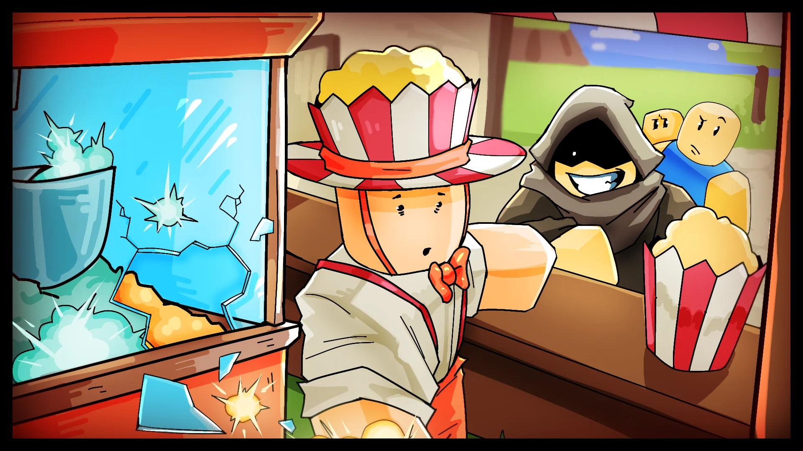
Un calme après-midi au Village Pirate a pris une tournure soudaine hier lorsque la machine d'un vendeur de popcorn local a explosé, en pleine vente de routine.
Des témoins rapportent que le vendeur préparait une nouvelle recette de « popcorn épicé », lorsqu'un grand et silencieux client s'est approché du stand. Quelques instants plus tard, les grains ont commencé à s'agiter violemment avant d'éclater dans une série de pops retentissants !
Aucune blessure n'a été signalée, mais le vendeur a depuis fermé boutique, citant des « dysfonctionnements » et une soudaine pénurie de grains. Les habitants trouvent ça bizarre, mais l'attribuent à un incident isolé... pour l'instant.
Questions aux Développeurs #3
Réponses de l'Équipe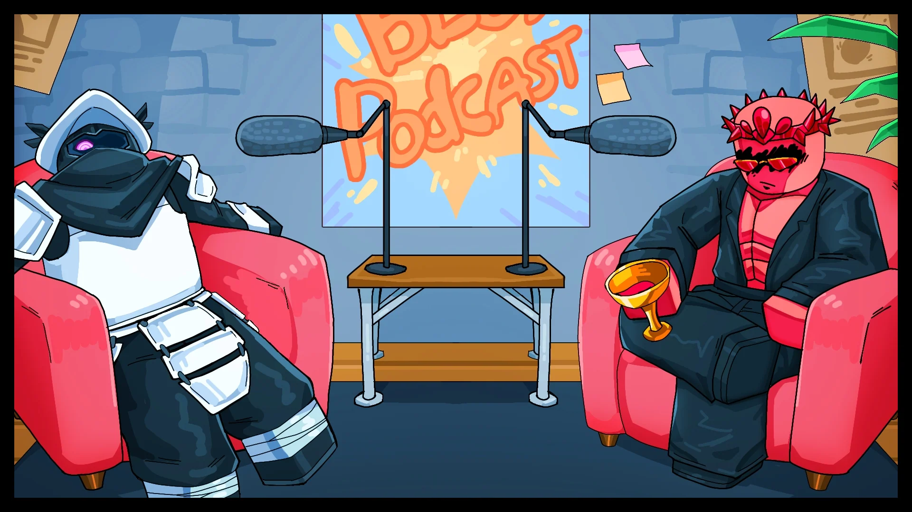
Les Marées de la Technique : Perfectionner la Voie de l'Eau
Par Ovur Driven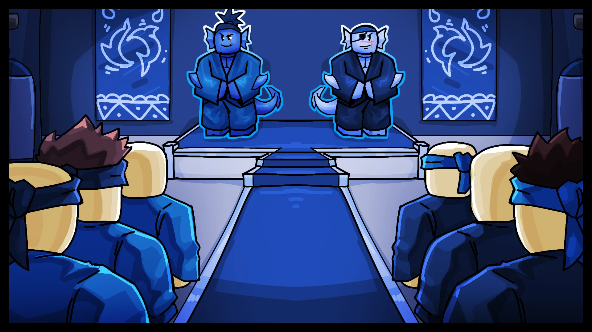
Les Sharkmen ont été occupés à perfectionner leurs anciennes techniques martiales... jusqu'à maintenant.
Des cours s'ouvrent pour ceux qui souhaitent apprendre les nouvelles techniques proposées ! Du niveau Basique à l'Avancé, tout le monde est le bienvenu.
Les étudiants débutants apprennent désormais les nouvelles bases fluides du Water Kung-Fu, tandis que les combattants aguerris continuent d'affiner la précision féroce du Sharkman Karate. Ceux qui pratiquent ces arts disent que leurs mouvements semblent plus nets, plus concentrés — comme si quelque chose de plus profond s'était éveillé dans le style lui-même.
Un signe, peut-être ! Un signe que les marées du combat sont en train de changer — et que même les styles les plus anciens ont encore des secrets à révéler.
Localement, on dit qu'il ne gagne jamais... pas au début.
Un combattant solitaire, couvert de cicatrices et enroulé dans des bandages usés, a été aperçu en train de défier les habitués de l'arène un par un — perdant chaque match au début, pour se relever quelques instants avant la défaite.
Il ne parle pas. Il continue juste de revenir. « Il se bat comme s'il n'y avait pas de lendemain », a dit un adversaire. « Je commence vraiment à m'inquiéter et à me sentir mal de le démolir à chaque fois... surtout qu'il revient pour en reprendre ! »
Chroniques du Feu de Camp : Au Cœur des Terres Sauvages
Par Twiggy LogleafAu fil des jours, les campeurs du parc d'État s'aventurent de plus en plus loin dans la forêt — revenant avec des herbes étranges, des viandes rares et des recettes qu'ils refusent de partager.
Certains affirment que leurs repas font désormais plus que simplement remplir le ventre. « Mes plaies se sont refermées du jour au lendemain, » dit un randonneur. « Je pense que c'était la racine lumineuse que j'ai ajoutée. Ou peut-être le crabe de rivière ? »
Quelle qu'en soit la cause, les feux de camp sont plus animés que jamais. Ici, la nourriture n'est plus seulement pour survivre — elle devient une forme de pouvoir silencieuse.
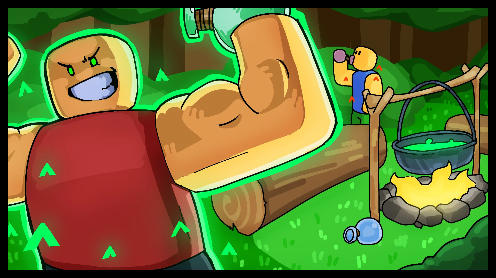
Chefs-d'œuvre en Devenir : Les Meilleures Créations de la Communauté
Des grandes roues aux hommages pixel-perfect, les joueurs ont poussé le mode construction du Fruit Création à un tout autre niveau. Cette sélection présente les soumissions les plus ingénieuses, chaotiques et créatives du formulaire communautaire de la semaine dernière.
Avec des créations comme celles-ci, difficile de ne pas imaginer ce qui pourrait encore être possible. Nous observons de près — et oui, de nouvelles pièces de construction pourraient bien arriver !
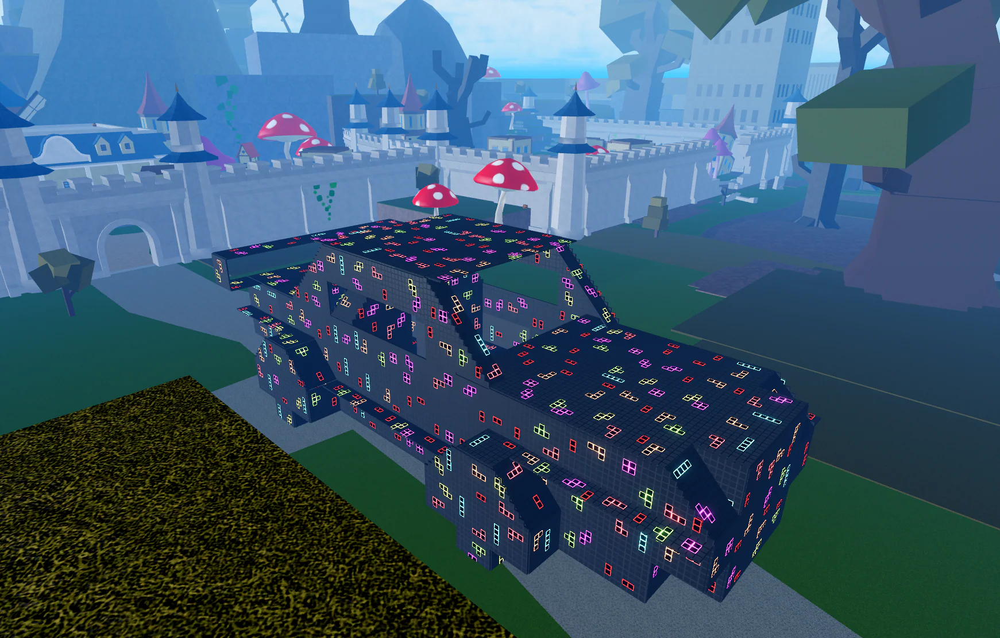
Voiture par lorozol/faregerflo/nindjaprofi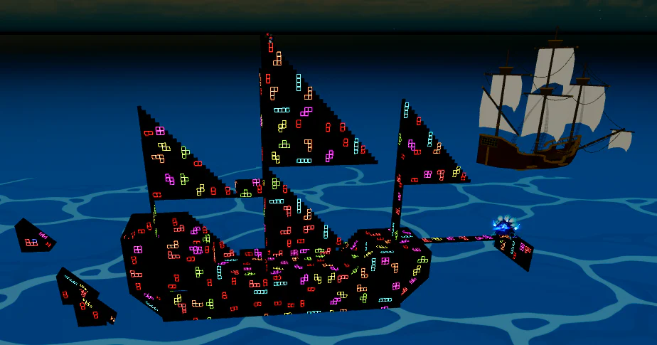
Bateau par supergameroofsus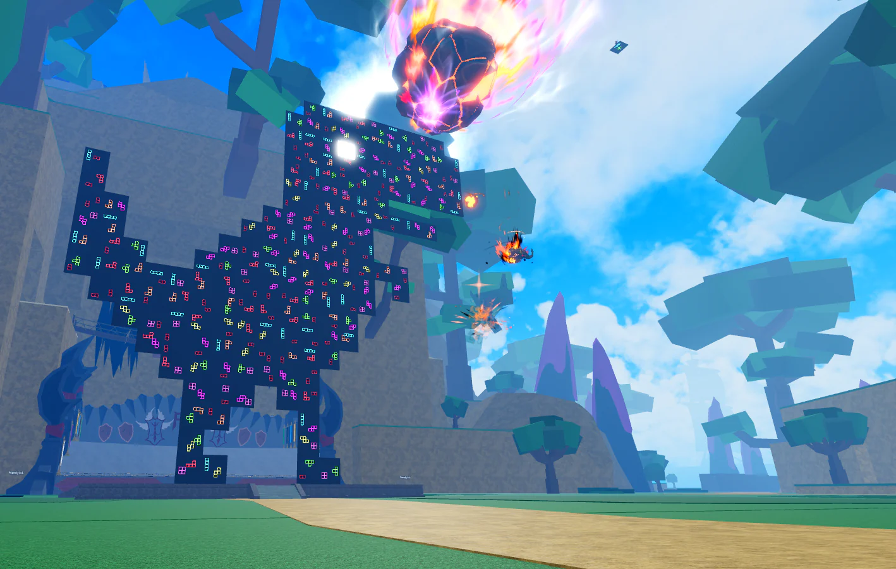
Dinosaure Chrome par bobobobo12345555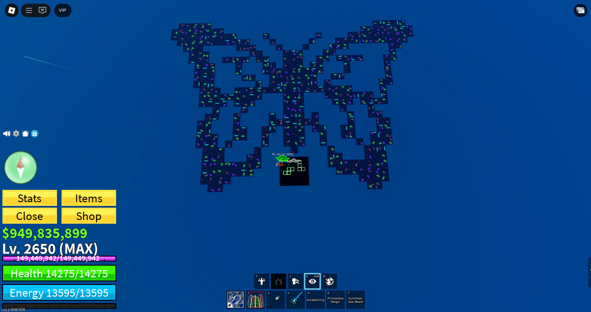
Papillon par Ades77795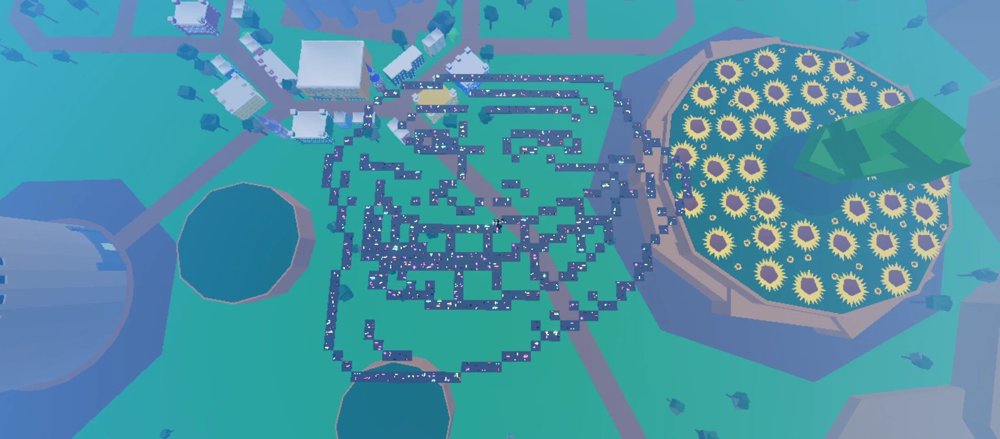
Troll Face par SowulTimus_309, 23lera06_2010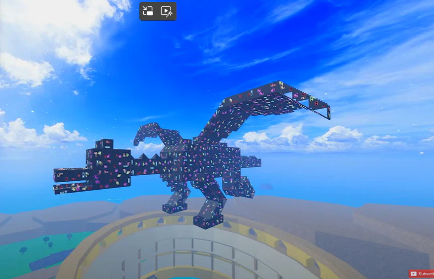
Dragon par XXander et son Équipe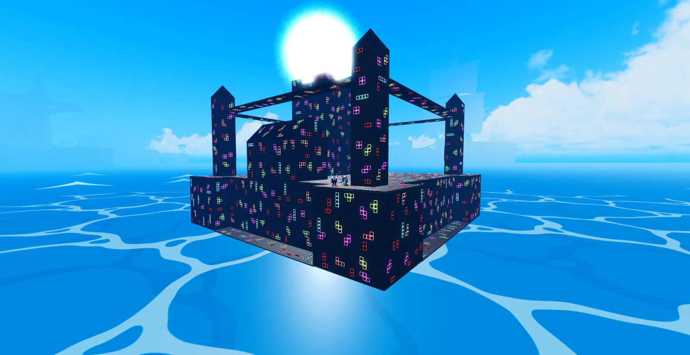
Château de Mer par filip0past10 et fishing_master5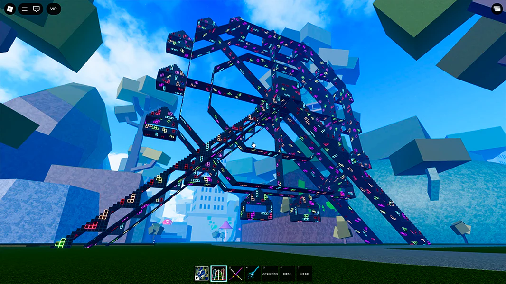
Grande Roue par Invisible7777777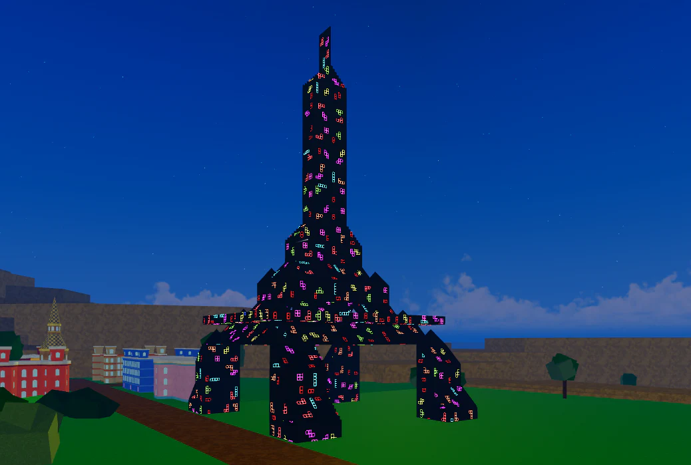
Tour Eiffel par Sussyboylol123321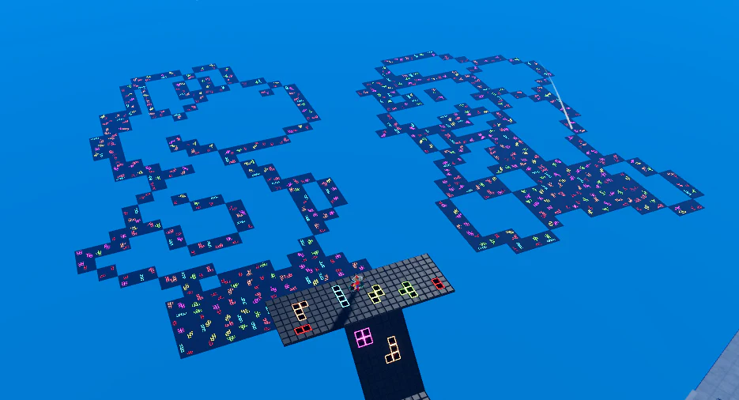
Mario et Yoshi par HazbucketROBLOX Discord
Discord
 TikTok
TikTok
 Youtube
Youtube